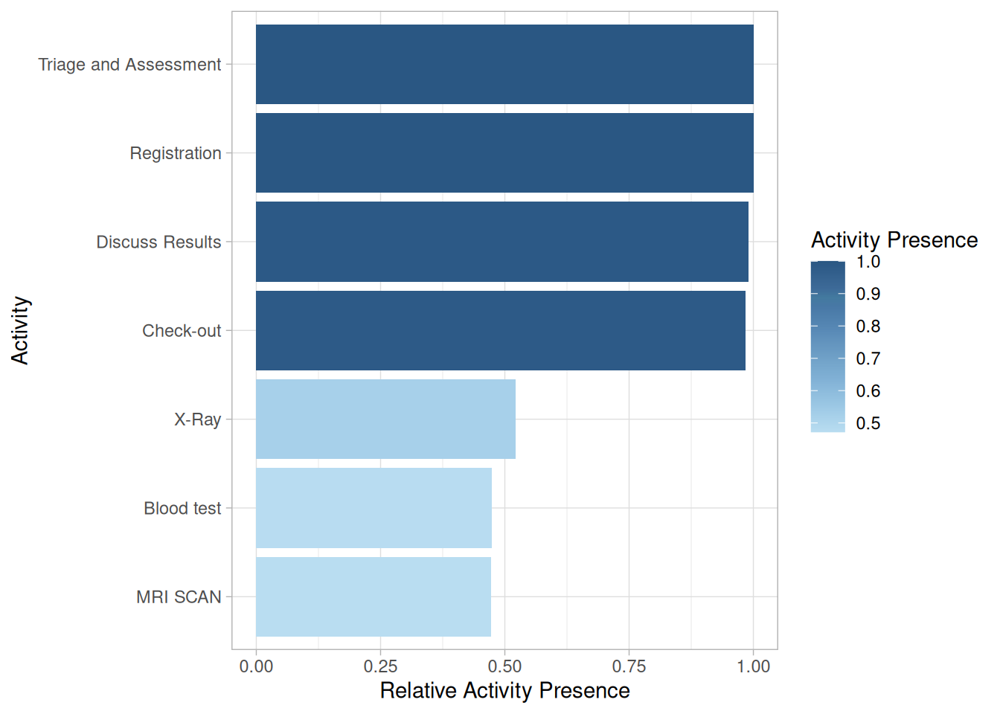
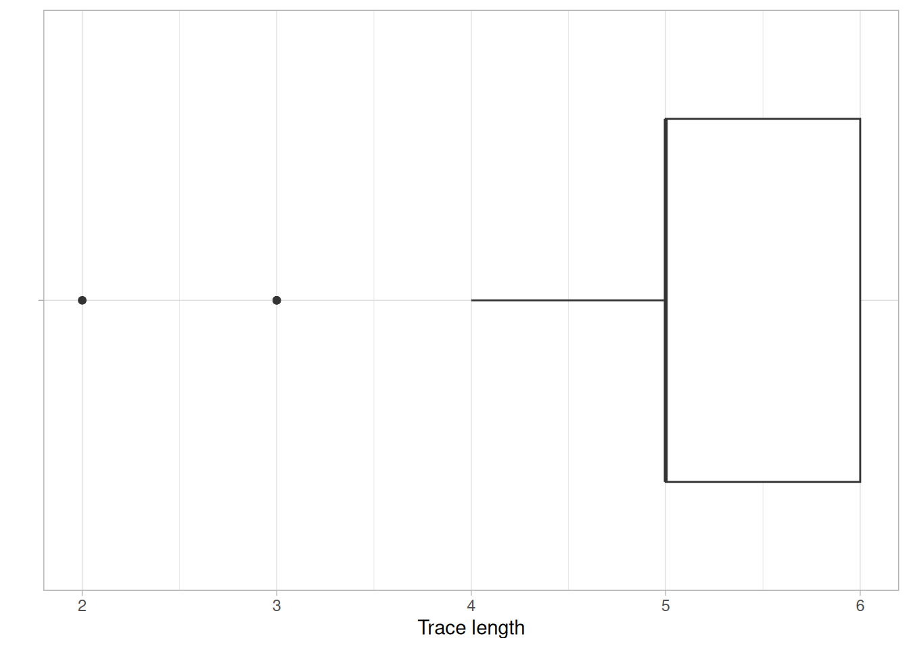

Control-Flow Analysis

Control-flow analysis
Metrics
Activity Presence
Activity presence shows in what percentage of cases an activity is present. It has no level-argument.

Activity Frequency
The frequency of activities can be calculated using the activity_frequency function, at the levels log, trace and activity.
## # A tibble: 7 × 3
## handling absolute relative
## <fct> <int> <dbl>
## 1 Registration 500 0.184
## 2 Triage and Assessment 500 0.184
## 3 Discuss Results 495 0.182
## 4 Check-out 492 0.181
## 5 X-Ray 261 0.0959
## 6 Blood test 237 0.0871
## 7 MRI SCAN 236 0.0867Start Activities
The start of cases can be described using the start_activities function. Available levels are activity, case, log, resource and resource activity.
## # A tibble: 1 × 5
## employee handling absolute relative cum_sum
## <fct> <fct> <int> <dbl> <dbl>
## 1 r1 Registration 500 1 1This shows that in this event log, all cases are started with the Registration by resource r1.
End Activities
Conversely, the end_activities functions describes the end of cases, using the same levels: log, case, activity, resource and resource-activity.
## # A tibble: 5 × 5
## employee handling absolute relative cum_sum
## <fct> <fct> <int> <dbl> <dbl>
## 1 r7 Check-out 492 0.984 0.984
## 2 r6 Discuss Results 3 0.006 0.99
## 3 r2 Triage and Assessment 2 0.004 0.994
## 4 r5 X-Ray 2 0.004 0.998
## 5 r3 Blood test 1 0.002 1In contract to the start of cases, the end of cases seems to differ more frequently, although it is mostly the Check-Out activity.
Trace Coverage
The trace coverage metric shows the relationship between the number of different activity sequences (i.e. traces) and the number of cases they cover.
In the patients log, there are only 7 different traces, and 2 of them cover nearly 100% of the event log.
Trace Length
The trace length metric describes the length of traces, i.e. the number of activity instances for each case. It can be computed at the levels case, trace and log.

It can be seen that in this simple event log, most cases have a trace length of 5 or 6, while a minority has a trace length lower than 5.
Rework
Several metrics to measure rework (repeated work) are provided by bupaR. A distinction is made between self-loops and repetitions. A self-loop is an immediate recurrence of the same activity (i.e. no other activity in between), while a repetition is a recurrence after some other activities.
The metrics number_of_repetitions and
number_of_selfloops can be used to analyse these
occurrences at the levels of log, case, activity, resource and
resource-activity. The metrics size_of_repetitions and
size_of_selfloops (available at the same levels) provide
further insight into the extent of the repeats within a single case
(e.g. is it repeated only once, or multiple times?). Finally, all these
metrics are able to distinguish between two types of rework:
repeat rework, where the same resource does the rework, and
redo rework, where the rework is done by another research. This
can be specified with the type argument. Specifying
type = all makes no distinction based on resources.
## # A tibble: 1 × 8
## min q1 median mean q3 max st_dev iqr
## <dbl> <dbl> <dbl> <dbl> <dbl> <dbl> <dbl> <dbl>
## 1 0 0 2 1.64 3 5 1.28 3## # A tibble: 1 × 8
## min q1 median mean q3 max st_dev iqr
## <dbl> <dbl> <dbl> <dbl> <dbl> <dbl> <dbl> <dbl>
## 1 0 0 0 0.827 1 33 1.82 1## Using default type: all## Using default level: log## # A tibble: 1 × 8
## min q1 median mean q3 max st_dev iqr
## <dbl> <dbl> <dbl> <dbl> <dbl> <dbl> <dbl> <dbl>
## 1 1 1 2 2.67 3 58 3.72 2## Using default type: all
## Using default level: log## # A tibble: 1 × 8
## min q1 median mean q3 max st_dev iqr
## <dbl> <dbl> <dbl> <dbl> <dbl> <dbl> <dbl> <dbl>
## 1 1 1 1 1.19 1 8 0.717 0Rule-based conformance
Using the packages processcheckr prodecural rules can be
checked in an event log. Checking rules will add a boolean case
attribute, which can be used for filtering or in analysis.
Rules can be checked using the check_rule function (see
example below). It will create a new logical variable to indicate for
which cases the rule holds. The name of the variable can be configured
using the label argument in check_rule.
In the following example, the first rule checks the starting activity, while the second rule checks whether CRP and LacticAcid occur together.
library(bupaR)
library(processcheckR)
sepsis %>%
# check if cases starts with "ER Registration"
check_rule(starts("ER Registration"), label = "r1") %>%
# check if activities "CRP" and "LacticAcid" occur together
check_rule(and("CRP","LacticAcid"), label = "r2") %>%
group_by(r1, r2) %>%
n_cases() ## # A tibble: 4 × 3
## r1 r2 n_cases
## <lgl> <lgl> <int>
## 1 FALSE FALSE 10
## 2 FALSE TRUE 45
## 3 TRUE FALSE 137
## 4 TRUE TRUE 858Checking multiple rules
Using the function check_rules, multiple rules can be
checked with one function call, by providing them as named arguments.
The following code is equivalent to that above.
sepsis %>%
check_rules(
r1 = starts("ER Registration"),
r2 = and("CRP","LacticAcid")) %>%
group_by(r1, r2) %>%
n_cases() ## # A tibble: 4 × 3
## r1 r2 n_cases
## <lgl> <lgl> <int>
## 1 FALSE FALSE 10
## 2 FALSE TRUE 45
## 3 TRUE FALSE 137
## 4 TRUE TRUE 858Rule-based filtering
Instead of adding logical values for each rule, you can also
immediately filter the cases which adhere to one or more rules, using
the filter_rules
sepsis %>%
filter_rules(
r1 = starts("ER Registration"),
r2 = and("CRP","LacticAcid")) %>%
n_cases() ## [1] 858Rules
Currently the following declarative rules can be checked:
Cardinality rules:
contains: activity occurs n times or morecontains_exactly: activity occurs exactly n timescontains_between: activity occures between min and max number of timesabsent: activity does not occur more than n - 1 times
Ordering rules:
starts: case starts with activityends: case ends with activitysuccession: if activity A happens, B should happen after. If B happens, A should have happened before.response: if activity A happens, B should happen afterprecedence: if activity B happens, A should have happend beforeresponded_existence: if activity A happens, B should also (have) happen(ed) (i.e. before or after A)
Exclusiveness:
and: two activities always exist togetherxor: two activities are not allowed to exist together
The available rules are explained in more detail below.
Cardinality rules
contains
Arguments:
activity: a single activity name.n(default = 1): the minimum number of the times the activity should be present
Returns: cases where activity occurs n
times or more.
[Example] How many cases have three or more occurences of Leucocytes?
sepsis %>%
check_rule(processcheckR::contains("Leucocytes", n = 3)) %>%
group_by(contains_Leucocytes_3) %>%
n_cases()## # A tibble: 2 × 2
## contains_Leucocytes_3 n_cases
## <lgl> <int>
## 1 FALSE 590
## 2 TRUE 460contains_exactly
Arguments:
activity: a single activity name.n(default = 1): the exact number of the times the activity should be present
[Example] How many cases have exactly four more occurences of Leucocytes?
sepsis %>%
check_rule(contains_exactly("Leucocytes", n = 4), label = "r1") %>%
group_by(r1) %>%
n_cases()## # A tibble: 2 × 2
## r1 n_cases
## <lgl> <int>
## 1 FALSE 960
## 2 TRUE 90Returns: cases where activity occurs n.
contains_between
Arguments:
activity: a single activity name.min(default = 1): the minimum number of the times the activity should be presentmax(default = 1): the minimum number of the times the activity should be present
Returns: cases where activity occurs between
min and max times.
[Example] How many cases have between 0 and 10 occurences of Leucocytes?
sepsis %>%
check_rule(contains_between("Leucocytes", min = 0, max = 10), label = "r1") %>%
group_by(r1) %>%
n_cases()## # A tibble: 2 × 2
## r1 n_cases
## <lgl> <int>
## 1 FALSE 38
## 2 TRUE 1012absent
Arguments:
activity: a single activity name.n(default = 0): the maximum number of times the activity is allowed to happen
Returns: cases where activity occurs maximum
n times.
Note that absent(n = x) is equivalent to
contains_between(min = 0, max = x)
[Example] How many cases have between 0 and 10 occurences of Leucocytes?
## # A tibble: 2 × 2
## r1 n_cases
## <lgl> <int>
## 1 FALSE 1012
## 2 TRUE 38Ordering rules
starts
Arguments:
activity: a single activity name
Returns: cases that start with activity.
[Example] How many cases start with “ER Registration”
## # A tibble: 2 × 2
## r1 n_cases
## <lgl> <int>
## 1 FALSE 55
## 2 TRUE 995ends
Arguments:
activity: a single activity name
Returns: cases that end with activity.
[Example] How many cases end with “Release A”
## # A tibble: 2 × 2
## r1 n_cases
## <lgl> <int>
## 1 FALSE 657
## 2 TRUE 393succession
Arguments:
activity_a: a single activity nameactivity_b: a single activity name
Returns: cases where (an instance of) activity_a is
eventually followed by (an instance of) activity_b, if
either activity_a or activity_b occurs.
[Example] How many cases is “ER Sepsis Triage” succeeded by “CRP”
sepsis %>%
check_rule(succession("ER Sepsis Triage","CRP"), label = "r1") %>%
group_by(r1) %>%
n_cases()## # A tibble: 2 × 2
## r1 n_cases
## <lgl> <int>
## 1 FALSE 229
## 2 TRUE 821response
Arguments:
activity_a: a single activity nameactivity_b: a single activity name
Returns: cases where (an instance of) activity_a is
eventually followed by (an instance of) activity_b, if
activity_a occurs. [Example] How many cases is “ER Sepsis
Triage” followed by “CRP”, if “ER Sespis Triage” occurs.
sepsis %>%
check_rule(response("ER Sepsis Triage","CRP"), label = "r1") %>%
group_by(r1) %>%
n_cases()## # A tibble: 2 × 2
## r1 n_cases
## <lgl> <int>
## 1 FALSE 106
## 2 TRUE 944precedence
Arguments:
activity_a: a single activity nameactivity_b: a single activity name
Returns: cases where (an instance of) activity_b is
preceded by (an instance of) activity_a, if
activity_b occurs.
[Example] How many cases is “CRP” preceded “ER Sepsis Triage”, if “CPR” occurs.
sepsis %>%
check_rule(precedence("ER Sepsis Triage","CRP"), label = "r1") %>%
group_by(r1) %>%
n_cases()## # A tibble: 2 × 2
## r1 n_cases
## <lgl> <int>
## 1 FALSE 186
## 2 TRUE 864responded_existence
Arguments:
activity_a: a single activity nameactivity_b: a single activity name
Returns: cases where if activity_a occurs, also
activity_b occurs (but not vice versa)
[Example] How many cases contain both “CRP” and “ER Sepsis Triage”, if “CPR” occurs.
sepsis %>%
check_rule(responded_existence("CRP", "ER Sepsis Triage"), label = "r1") %>%
group_by(r1) %>%
n_cases()## # A tibble: 2 × 2
## r1 n_cases
## <lgl> <int>
## 1 FALSE 1
## 2 TRUE 1049Exclusiveness rules
and
Arguments:
activity_a: a single activity nameactivity_b: a single activity name
Returns: cases where both activity_a and
activity_b occur or both are absent
[Example] How many cases contain both “CRP” and “ER Sepsis Triage”.
## # A tibble: 2 × 2
## r1 n_cases
## <lgl> <int>
## 1 FALSE 44
## 2 TRUE 1006xor
Arguments:
activity_a: a single activity nameactivity_b: a single activity name
Returns: cases where either activity_a or
activity_b occur, but not both.
[Example] How many cases contain “CRP” OR “ER Sepsis Triage”.
## # A tibble: 2 × 2
## r1 n_cases
## <lgl> <int>
## 1 FALSE 1006
## 2 TRUE 44Copyright © 2023 bupaR - Hasselt University